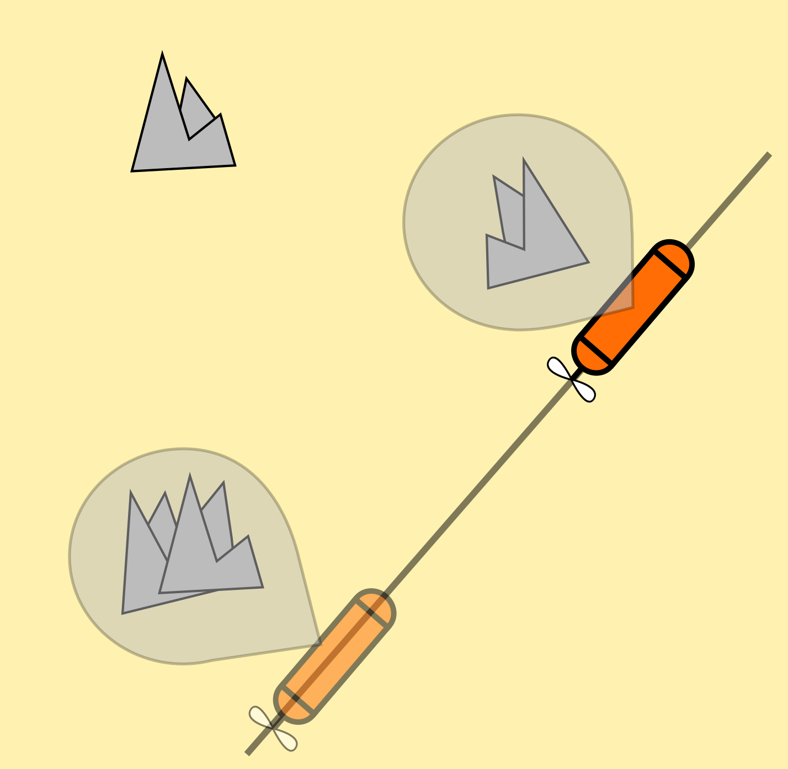
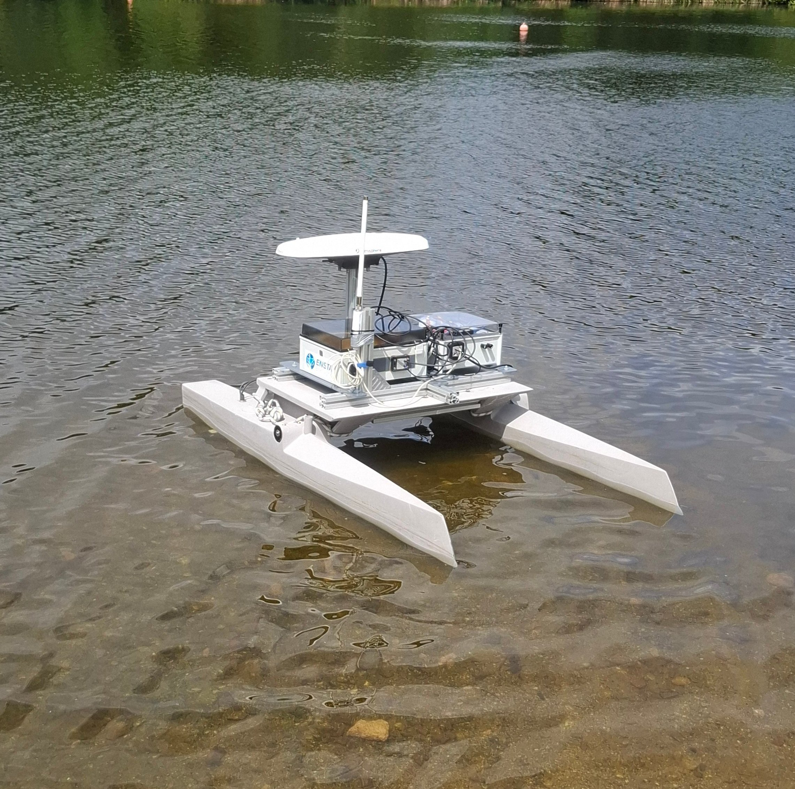

Contributions
Manuscript : Safe navigation of a robot in a landmarked environment
In underwater robotics (between other use cases), it is not always possible for a robot to locate itself due to the lack of GNSS positioning. A way to paliate this issue is to use the environment itself to relocate the robot when possible. A classical way to do so is to rely on landmarks, i.e. on remarkable structures, to estimate the robot state.
To do so, the robot needs to be able to sense a landmark. Between each sensing, the robot has to navigate in the environment with no information. The objective of this work is to show a way to assert that the robot will end up sensing a landmark and will never be lost. Below is the current version of the manuscript.
Safe navigation of a robot in a landmarked environment
Thesis examples : Public repository
During the redaction of the manuscript, multiple codes have been written to illustrate concepts and show the effectiveness of the provided methods. As part of an open science approach, all of the codes used are available on a public Github repository. It is available at this address : https://github.com/godardma/thesis_example.Library : PEIBOS
The PhD thesis also lead to the creation of a library named PEIBOS. A dedicated page is available on this website : https://godardma.github.io/subpages/libs/parallelepiped.html. Note that this library is however not maintained anymore. Indeed, it relied on the
CODAC library for its interval computations.
It is now fully merged in the CODAC library and is distributed with it. The documentation of the PEIBOS
tool in CODAC is available here :
https://codac.io/manual/functions/peibos/peibos.html.
Note that this library is however not maintained anymore. Indeed, it relied on the
CODAC library for its interval computations.
It is now fully merged in the CODAC library and is distributed with it. The documentation of the PEIBOS
tool in CODAC is available here :
https://codac.io/manual/functions/peibos/peibos.html.
Datasets and drivers
Throughout the thesis, multiple experiment have been made with Hélios, an USV from ENSTA (approximately 2m long).
These experiments lead to the development of multiple drivers for the different sensors. These drivers are available on this website : https://godardma.github.io/subpages/libraries.html. Some datasets have also been made, a lot of them including images taken with the Oculus Forward Looking Sonar (FLS). If you are interested in those datasets, feel free to reach me at this mail : mgodard00@outlook.com.Organization
The PhD defence will take place at ENSTA, Brest site.